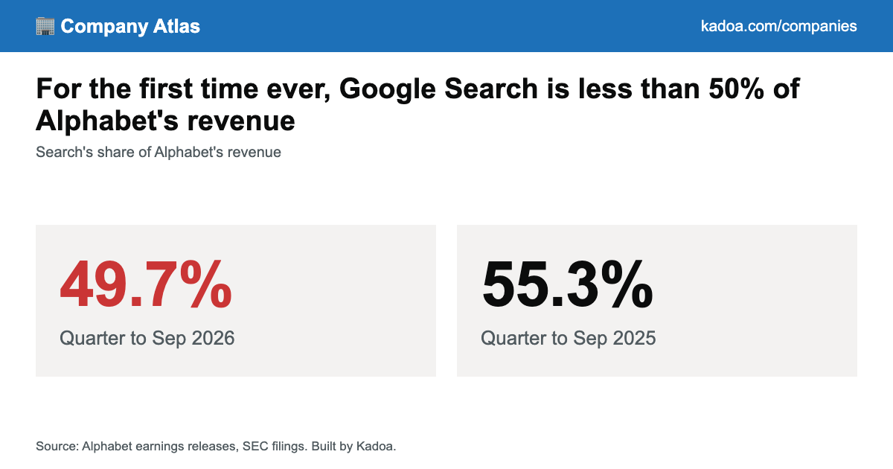
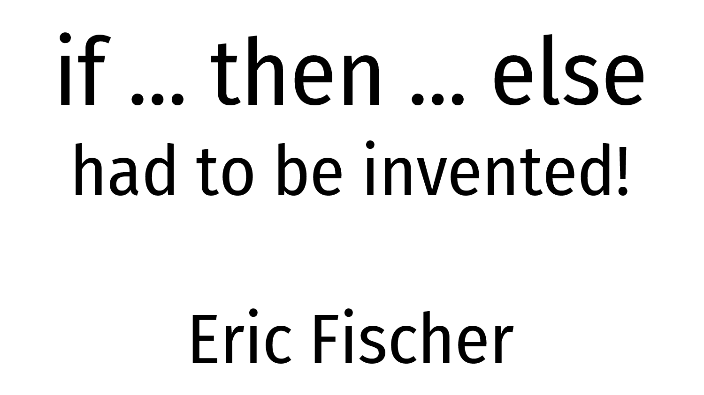

The front page, read closely and set in type — a briefing for Keegan
Compiled from news.ycombinator.com
Thursday, October 29, 2026
Every fact checked; every joke earned
Culture Desk · The LeadPatrick Stewart has diedThe New York Times’ report leads the page at 1,159 points, and the thread beneath it has become a wake: sonnets read during lockdown, a 1981 Excalibur, and one reader’s flute.
AI Desk · Open WeightsMistral frees Le ChonkOne trillion parameters, open-weight, trained on European infrastructure — and named, by its own maker, after a very large cat. The smallest announced quant still wants 256 GB of VRAM.
Commerce Desk · ConsolidationDoorDash to buy Instacart$65.00 a share, $17 billion in equity, a 26 percent premium — and the day’s most-discussed story, with 539 comments and a thread already litigating antitrust.
Big Tech Desk · A MilestoneSearch dips under one halfGoogle Search was 49.7 percent of Alphabet’s revenue in the quarter through September — the first sub-half quarter since the company began reporting it separately.
Lead Story · Obituary · Culture Desk
Patrick Stewart Has Died
The Times’ report, filed in its arts section, sends the front page into mourning; the thread below the news is four hours old and already full of childhoods
From the Culture Desk★ 1,159 pts · 211 comments
NEW YORK — The New York Times reported the death of Patrick Stewart on Thursday, in a piece filed to its arts and television desk, and the news needed no second headline: submitted to Hacker News under the plain words “Patrick Stewart has died,” it gathered 1,159 points by early evening, the day’s top score.[1][2] The Herald’s attempts to read the obituary itself were turned away at the Times’ gates, so this dispatch is typeset from the report’s fact and from the 211 comments beneath it — which, on this story, is where the reporting lives anyway.
What the thread holds, chiefly, is testimony. One reader: “It feels similar to having a good childhood friend pass into the night.”[2] Another calls Stewart “a base rock part of my personality,” Star Trek: The Next Generation having been formative for him from ages 7 to 12.[2] A third remembers the pandemic version of the man: “when COVID lockdowns started, he just made reels reading Shakespeare’s sonnets. It was such a lovely break from everything else on social media.”[2] The range gets its own exhibits — a recommendation to watch him in Excalibur (1981), and the observation that “to be an actor of that level, yet still have so much fun in American Dad! is so cool.”[2]
“Plays a melancholy melody on a flute.”A reader, below the news · HN thread
The shortest tribute in the thread is also the longest-lens one: seven words, no capital letter, a scene every mourner present recognized on sight.[2] Another reader keeps a miniature USS Enterprise, a gift of an uncle who watched the show with him; the thread, this afternoon, is that shelf.[2] The Herald sets the lead in black and adds nothing to it. Some pages set themselves.
AI Desk · Open Weights
Mistral Opens the Weights of Le Chonk
AI Desk★ 961 pts · 270 cmts
Mistral has released the weights of Mistral Large 4, a one-trillion-parameter, natively multimodal model that the company also, and without apparent embarrassment, calls “Le Chonk.”[3] The claims arrive with receipts: 19.7 percent on Cognition’s private FrontierCode 2.0, a benchmark scored by “whether a repository maintainer would merge the agent’s change”; a 13-point jump to 41 percent on Terminal-Bench 4.0 while cutting output tokens 30 percent; and 48 percent on the Artificial Analysis Coding Agent Index, tied with GLM-5.3 at 47 percent fewer tokens per task.[3]
The announcement art for the open-weight release. Mistral.ai
The defenders’ edition: 51 percent on the Artificial Analysis Cyber Index, a 96.6 percent refusal rate on malicious cyber requests — “the highest we measure among open models” — and testimonials from Booz Allen, Cisco, Cloudflare, CrowdStrike, Elastic, ENISA, Fortinet and NVIDIA.[3] Cloudflare’s Stephanie Cohen supplies the doctrine: “a defense you don’t control isn’t defense — it’s exposure.”[3] The thread got practical fast: one reader flags that the Hugging Face links are “kind of buried down at the end”;[4] another learns the smallest day-zero quant “will still require 256GB VRAM” and does the household math — “Ugh, ok … another 32GB and it would work.”[4] A third is blunt about the rest of us: “I have no idea how you could shrink this down to fit on any type of prosumer hardware.”[4]
Commerce Desk · The Weekly Shop
DoorDash Agrees to Buy Instacart for $17 Billion
Commerce Desk★ 343 pts · 539 cmts
DoorDash will acquire Instacart — formally Maplebear Inc. — at $65.00 per share, a 26 percent premium to Instacart’s Oct. 22 close and an equity value of roughly $17 billion, with at least 75 percent of the consideration in cash and Instacart’s board voting yes unanimously.[5] The framing is Mom-and-pop: together, the companies say, they will “help local stores win” against the biggest online retailers, handing grocers Instacart’s technology, DoorDash’s delivery network, DashMart fulfillment, and “the advertising and AI tools each company has built.”[5]
The deal, as drawn by the buyers. About.doordash.com
The chief executive supplies the tenderest sentence in merger prose: “Grocery is one of the hardest things to get right online. Someone has to pick a ripe avocado, find a substitute you’d choose yourself, and get the ice cream to you before it melts.”[5] The thread’s 539 comments are less romantic. One reader: “I’d cry ‘antitrust’ but who are we kidding at this point.”[6] Another, of the pair: “If they both disappeared tomorrow I think most people wouldn’t care.”[6] A third asks after the disabled customers who order food this way, and is told about Meals on Wheels; a fourth simply remembers the ZIRP era, “a new food delivery (or e-scooter) startup almost every week.”[6]
Big Tech Desk · The Ledger
Google Search Slips Below Half of Alphabet
Big Tech Desk★ 364 pts · 310 cmts
In the quarter through September, Google Search brought in $63.4 billion of Alphabet’s $128 billion — 49.7 percent, the first time the share has fallen below half since Alphabet began reporting Search separately.[7] In the 31 quarters before, Search ran between 52.8 and 62.0 percent; over the same years Google Cloud went from 4.4 percent of revenue to 24.1 percent.[7] The report is careful about the direction of causation, and the headline is not: “Search revenue still grew — the share fell because the rest of Alphabet grew faster.”[7]

The share, crossing the line. Kadoa.com
The thread cannot decide whether to mourn or congratulate. “Isn’t this good news because they’re diversifying their streams?” one reader asks;[8] another answers that Google “really had developed only 2 good products (not including acquisitions such as YouTube): search and gmail,” and that the company may be rotating toward the fate of “old businesses (I.e IBM, AOL).”[8] The YouTube aside detonates its own skirmish: bought as “a galaxy-scale cash incinerator,” one reader insists, and made to work only on Google’s own fiber — to which a third replies that the acquirer merely “waited for cost of storage, bandwidth, compute to come down below revenue from advertising. As it would have done naturally anyway.”[8]
The Share, As Reported
Search, share of Alphabet revenue, Q3 2026
49.7%
Search share, previous 31 quarters
52.8–62.0%
Google Cloud, then and now
4.4% → 24.1%
Search revenue itself
Grew
Field Desk · Reported From the Thread
The Cars Americans Can’t Buy, and the Article They Can’t Read
Field Desk★ 260 pts · 285 cmts
MEXICO CITY, MEXICO — The Washington Post sent a reporter to Mexico to test-drive the cheap Chinese-brand electric cars Americans cannot buy — so says the headline; the slug underneath adds “i-saw-future-driving-cheap-ev-chinese-brands-mexico.”[9] The Herald could not obtain the article either: the Post’s wall turned this newsroom away, a fact the thread documented within minutes of posting (“This link still runs into a subscription paywall, as do most of your recent posts”), leaving the cars and the prose about them in the same condition — adjacent to America, unavailable to it.[10]
The thread, then, is the test drive. A visitor to Mexico reports being “pleasantly surprised to see as many BYD as I did,” concluding that “being able to see the car in person is far more impressive than a YouTube video”; another was “really impressed with the BYDs I rode in for uber while in Mexico.”[10] At a friend’s wedding, a fourth found “about half the Ubers we took were driving Chinese EVs.”[10] And from South Africa, where the cars are sold, a Sealion 5 owner reports buying in May and doing about 4,500 kilometers with the tank “still over half full since last filling it up mid July.”[10] The future, the thread agrees, is already on the road south of the border — it is merely waiting on a trade lawyer.
Culture Desk · The Craft
Martin Fowler Names the Tell: “the Uncanny Valley of Prose”
Culture Desk★ 254 pts · 137 cmts
In a bliki post dated today, Martin Fowler gives the sensation of reading machine-written text its own name and its own diagnostic: “the uncanny valley of prose.”[11] The tells, he notes, are not what the discourse claims — “it’s not the em-dashes, it’s the load-bearing tapestries” — and no detector will save you: “By the time I’d reach for a tool to tell me what I’m reading, it’s already too late.”[11] His counsel to authors is austere: do not let the model draft, because the voice survives the edit — he knows one fully LLM-drafted piece that read clean, “but it did need a professional editor at a major periodical publication.”[11]
The site’s own mark, which has never once sounded like anything else. Martinfowler.com
The stakes, for Fowler, are not stylistic: “As more people delegate writing to LLMs they will also delegate thinking and comprehension to LLMs. I don’t want to do that — where’s the fun of writing then?”[11] He carves his exceptions carefully — a colleague with Parkinson’s for whom the LLM is essential (“I’ll gladly deal with LLM-Voice in order to continue imbibing my old friend’s wisdom”), translation, and “a report I suspect no-one will ever read.”[11] The thread adds the mirror: one reader finds that because most of what he reads is LLM output, “I tend to ‘adopt’ this style in my writing … writing as an LLM without using one”;[12] another runs the arithmetic — humanity writes half a trillion tokens a day and reads two trillion, “more than the whole training set of GPT-4” in a week: “Human language is being shaped back by AI language.”[12]
Security Briefing · PHP2Shell
One HTTP Request, 883 MB of Bad Manners, and 25 Rooted Firewalls
Security Desk★ 238 pts · 104 cmts
On Oct. 25, researchers at Dream, hunting with the firm’s autonomous cyber-research product Hero, uncovered artifacts of a campaign that rooted 25 Palo Alto Networks PAN-OS firewall and management servers across the United States, Japan, Taiwan and South Korea — including three servers in “a US government-affiliated environment” — then turned on Active Directory for credential extraction and directory enumeration.[13] Palo Alto’s Unit 42 has “independently verified the attacker’s tooling and results,” and fixed PAN-OS versions are rolling out.[13]
The write-up’s own art. Dreamgroup.com
The exploit is a chain — PHP2Shell (CVE-2026-109618/109619) welded to the Fragnesia kernel privilege escalation (CVE-2026-46300) — that reaches root on an internet-facing firewall “in a single HTTP request without any credentials,” aimed at PHP’s session.upload_progress on PAN-OS’ appweb server, which runs PHP 8.0.30.[13] The choreography asks for roughly 383 MB of memory exhaustion to force a predictable layout, leaks the base address of libphp.so through a Set-Cookie header, spends another ~500 MB setting up a stale reference, then forges a PHP HashTable entry whose destructor points at zif_system — the machine politely calling system() during cleanup.[13] Roughly 40 custom post-exploitation scripts came with it.[13]
The uncomfortable detail is the workbench: the attacker’s infrastructure had Claude Code installed, an offensive platform called aiscan configured with DeepSeek and Kimi, and API keys for the Chinese recon platform FOFA — though the researchers concede “no direct evidence” the AI tools wrote the exploit, only that style and consistency “suggest AI-assisted development.”[13] The thread, meanwhile, re-litigates the underlying PHP bug’s reputation: “RCE on every PHP server, from anywhere on the internet, no other requirements,” one reader summarizes — and a skeptic answers that the standing Bitcoin bounty went unclaimed so long that “a lot of people” concluded the vulnerability was oversold, until the test rig was fixed “and got popped within like 2 hours.”[14] The closing question hangs over the whole bench: “Which best practices did you use to prevent exploitability? And would you stake your bitcoin on it?”[14]
Network Desk · Cartography
If IPv4 Were Land, the Dutch Would Rule the World
Network Desk★ 195 pts · 216 cmts
The premise of a new visualization from IP Trust: the world has about 135 million km² of land outside Antarctica and 3.6 billion locatable IPv4 addresses, so redraw every country with area proportional to its share of addresses instead of ground.[15] The Herald ran the page’s own published country data: the United States, holding 1.53 billion addresses — 42 percent of the world’s routable internet — swells to roughly 5.8 times its size; the Netherlands, with 51.4 million addresses against 33,480 km² of actual land, fattens to about 57 times itself.[15] The thread’s favorite exhibit was inevitable: “Good to see the Dutch were able to seize a lot of blocks from the sea!” — “It’s what we do ;).”[16]
The losses are the point: the Democratic Republic of the Congo, holding 233,717 addresses against 2.27 million km², shrinks to under half a percent of itself, and a reader quoting the page’s tables reports North Korea drawn 1,069.6 times smaller and Greenland 1,507.8 times smaller.[15][16] (Small territories with no map outline at this resolution — some 52 million addresses, mostly Hong Kong, Singapore and Mauritius — are left off entirely.[15]) The commentariat supplies the moral without being asked: “The fact that we have yet to fully deprecate IPv4 should be considered a great failure in the tech industry’s competence” — and the reply, from the other side of the ledger: what holder of “such a large capital of IPs” would volunteer to make it worthless by supporting IPv6?[16]
Practical Tech Corner · A Classic Returns
H.264 Is Still Magic, and the Math Is Still Rude
Practical Tech Corner★ 229 pts · 103 cmts
Sid Bala’s 2016 essay on H.264 is back on the front page, and its opening stunt has lost none of its cheek: a PNG screenshot of the Apple homepage weighs 1,015 KB, while five seconds of 60-frames-per-second H.264 video of that same page — 300 frames — weighs 175 KB. “Those file sizes look switched,” he writes. They are not: storing 300 times the data in a fifth the space, “H.264 would seem to be 1500x as efficient as PNG.”[17]
The essay’s title art, ten years old and still compressing. Sidbala.com
The explanations are a small liberal-arts education: raw 1080p at 60 Hz is “~370 MB/sec,” enough that “a 50GB Blu-ray disk will only hold ~2 mins”; lossy compression is taught through a street-racing diet (“Those back seats? pfft. Chuck those. That subwoofer? Gone.”); entropy through a coin that lands heads ten times, which you would describe as “10 tosses, all heads” — compressed, by you, just now.[17] Detail-discard alone puts a MacBook Pro at 7 percent of its size, speaker-grill holes gone.[17] The thread fast-forwards a decade: “Article is dated (2016),” one reader notes; “Ten years later, 2026 magic: AV1,” another answers, with AV2 on the runway — and then the thread argues about whether AV1 is “mainstream” until someone points out the Shield being cited as counter-evidence is seven years old, “only one year newer than AV1 itself.”[18]
The Long View · Prehistory of Code
“Else” Had to Be Invented
The Long View★ 157 pts · 151 cmts
A 2020 talk-as-transcript by Eric, resurfaced: if-then-else had to be invented, and the proof is linguistic. “That’s just English, right? Except that it isn’t. I can’t use ‘else’ as a conjunction in normal speech, only in computer programs.”[19] The archives agree with him: pre-computer records yield “if yes,” “if no,” and “if however,” but no “else”; the 1946 ENIAC work of Haskell Curry and Willa Wyatt called the choosing facility “discrimination”; the conditional jump of a 1949 BINAC brochure checked whether a number was negative; Fortran’s first “if” leapt three ways at once, by sign; and Grace Hopper’s Flow-Matic named the leftover case “otherwise.”[19]

Slide one of the talk: the absurd idea, stated plainly. GitHub
The thread, being a comments section, immediately tests the thesis against the language. “The English language origin is from programming if/then/else,” one reader asserts; “Very not true,” comes the two-word rejoinder — and then the counterevidence, fluent and everyday: “Hurry up, else we’ll be late. You’d better leave now, else you’ll miss the bus. Do what I say, else there’ll be trouble.”[20] A third reader’s verdict on the whole matter is the thread in miniature: sure you can use “else” in speech — “who’s going to stop you?” — to which the answer, of course, is: someone else.[20]
Quote of the Day
“Grocery is one of the hardest things to get right online. Someone has to pick a ripe avocado, find a substitute you’d choose yourself, and get the ice cream to you before it melts.”Tony Xu, CEO of DoorDash, announcing the Instacart acquisition · about.doordash.com
FOR SALE: One (1) cat, one trillion parameters, answers to “Le Chonk.” Open weights, closed mortgage — smallest quant still requires 256GB VRAM and a sunny windowsill.[3]
ANTIQUE: “Else,” one careful owner since 1958. Previously “otherwise.” Still legal in speech, contrary to rumor.[19]
WANTED: IPv4 addresses, any condition. Will pay in land. The Netherlands is already 57 times richer in /8s than in territory and is accepting applications from the sea.[15]
NOTICE TO GROCERS: The avocado must still be picked by hand and the ice cream will still melt. All other steps have been acquired for $17 billion.[5]
Also on the Wire
Tomáš Mikolov awarded the Czech Medal of Merit
140 pts
Alleged Chinese spy had ‘close relationship’ with Nvidia’s Jensen Huang
136 pts
Zombie stats: where the numbers AI quotes come from
117 pts
What we know so far about the Spain train crash
110 pts
The Box Score — Front Page by the Points
The Day in One Line
Ten fresh stories, 4,160 points, 2,326 comments: Patrick Stewart’s death leads the page and its thread becomes a wake; Mistral opens the weights of a one-trillion-parameter model named Le Chonk; DoorDash agrees to pay $17 billion for Instacart while the thread argues about whether anyone would notice; Google Search slips below half of Alphabet for the first time; and two classics — H.264’s 1,500-fold magic and the invention of “else” — return to explain the invisible.
Front Page Ledger
Stories surveyed
10
Aggregate points
4,160
Aggregate comments
2,326
Fresh stories
10
Follow-ups
0
Carried in digest
0
Top story by points
Patrick Stewart (1,159)
Most-discussed
DoorDash–Instacart (539)
Stories the newsroom could not open
2 (Times, Post)
Apple stories (red hatch)
0
Corrections & Clarifications
Clarification: In the phrase “AI-assisted campaign,” the evidence is that the tools were installed — Claude Code, aiscan with DeepSeek and Kimi, FOFA keys — not that they drove. The researchers’ own words: “no direct evidence.” The adjective is doing more lifting than the noun.[13]
Correction: This page’s bulletin said Google Search “dips under one half,” which is true of the share and misleading of the money: Search revenue grew to $63.4 billion in the quarter. The line it crossed was alphabetical, not financial.[7]
Correction: The cars Americans can’t buy are, as of press time, joined by the article about them: the Post’s paywall turned away this newsroom and, the thread reports, most everyone else. The Herald regrets the symmetry.[9][10]
Clarification: In “open weights,” the word “open” describes the license, not the luggage. Le Chonk weighs one trillion parameters; the smallest announced quant still requires 256GB of VRAM.[3][4]
From the Publisher’s Desk
An afternoon in which the top of the page is an obituary and the bottom of it is a eulogy for “else” — the news that Patrick Stewart has died arrived via a Times report this newsroom could not open, so the Culture Desk typeset it from the 211 comments beneath the link, and found them equal to the assignment: a flute, some sonnets, a childhood or two hundred. Around that, the machines kept their appointments: Mistral gave away a one-trillion-parameter model it calls Le Chonk and the thread immediately measured its own graphics cards against the cat; DoorDash agreed to buy Instacart for $17 billion, a sum the thread weighed against the cost of a ripe avocado; Google Search fell below half of Alphabet’s revenue while growing anyway, a demotion and a promotion in the same sentence; and a single unauthenticated HTTP request was shown to root a firewall, provided it may first eat 883 megabytes of memory. The Herald’s rule held: every number above was counted at 21:01 UTC, every quote lifted from the record, and every joke paid for by a source. The Captain’s log, this once, writes itself.
— The Herald
Wire Services & Citations
“Patrick Stewart has died” — The New York Times, arts/television, Oct. 29, 2026 (the article itself was unreachable from this newsroom; the story above is reported from the submission and its thread). nytimes.com
“I went to Mexico to test-drive the cars Americans can’t buy” — The Washington Post, climate-environment, Oct. 27, 2026 (paywalled; unreachable from this newsroom; the story above is reported from the submission and its thread). washingtonpost.com
“If IPv4 were land” — IP Trust, October 2026 dataset (country address counts from the page’s own published data; ratios computed by The Herald from that data). iptrust.co/blog/if-ipv4-were-land
Methodology: The front page was snapshotted at ≈21:01 UTC on Oct. 29, 2026, via the Hacker News (Algolia) front-page API (30 live stories) and scored as found. Ten stories were selected preferring those not covered in the previous four editions; none of the ten had been covered, so this edition runs ten fresh stories, no follow-ups, and no digest. Aggregates (4,160 points; 2,326 comments) are the exact sums of the ten snapshot scores. The New York Times and Washington Post articles were unreachable from this newsroom (bot wall and paywall/timeout respectively); both stories are typeset from submission metadata and thread comments, as noted in their sources. The IPv4 map figures are computed from the page’s own published country dataset (IP Trust geolocation database, October 2026); world land area of 135 million km² and 3.6 billion locatable addresses are the page’s stated constants. Article text, comments and images were fetched from each source this run; images are each site’s own announcement art, credited by host, with file types verified by magic bytes (Mistral’s image is served as JPEG under a .webp address and was re-extended accordingly). Every quote is from a fetched article or thread. Corrections and classifieds reference today’s stories only.